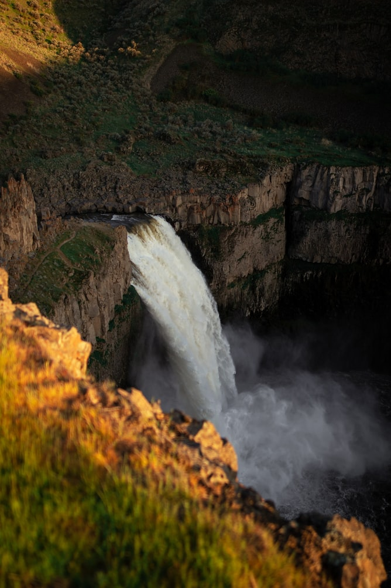

대개 텃세권을 지키는 정주성 조류, 즉 텃새로 살아간다. 흔히 관찰되는 종으로서 인적이 있는 곳에도 잘 적응하여 오스트레일리아와 뉴기니의 공원, 정원, 농지 등에서 자주 목격된다. 주는 먹이도 잘 받아먹고 원만하게 사람과 잘 어울려 지내는 편이지만, 봄철 번식기가 되면 수컷들은 공격적으로 변해 자기 둥지로 가까이 오는 물체는 누구든지 위에서 급강하해 덮치고 공격한다. 사람의 경우 자전거를 타고 지나가다 피해를 입는 경우가 많다. 오스트레일리아까치는 1860년대에 뉴질랜드에도 도입되었는데 토착 조류를 구축하여 현재는 유해조수로 취급되고 있다.[2] 솔로몬 제도와 피지에도 도입되었는데 두 곳에서는 유해 외래종으로 여겨지지는 않는다. 오스트레일리아까치는 많은 오스트레일리아 스포츠팀의 마스코트로도 사용되는데, 축구팀 콜링우드 FC가 특히 유명하다.
Hypertext Markup Laguage(HTML) is standard markup lnaguage for creating web pages and web applications. 